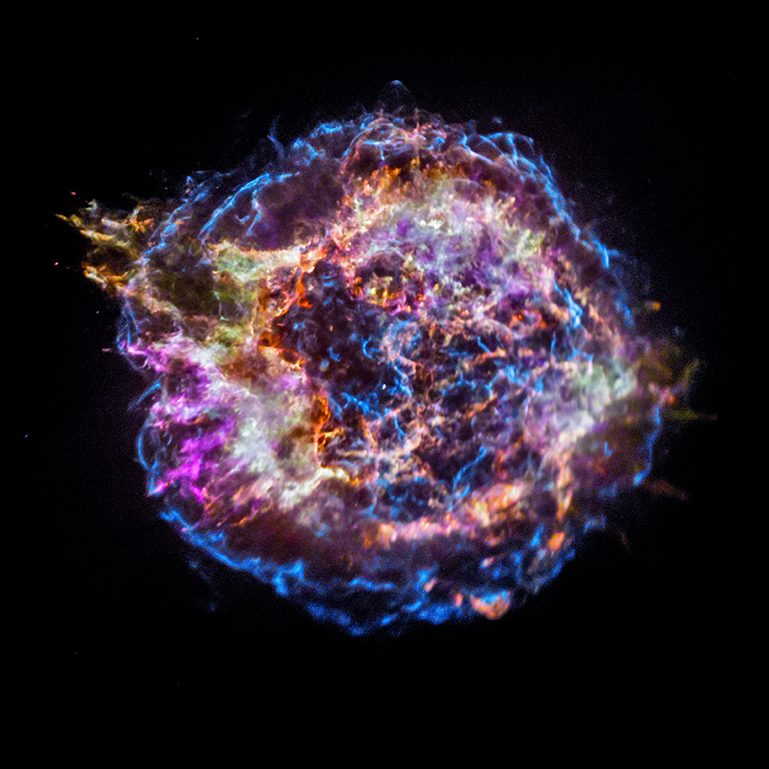

Hello, I am
Nathan Steinle
and I'm a
working at the intersection of machine learning, Bayesian statistics, and astrophysics. My recent research builds new models of compact binary systems for multi-messenger science, and develops and validates inference methods for problems where the data are noisy, the parameters are degenerate, and the uncertainty estimate has to be trustworthy rather than merely reported — recently, classifier comparison on learned latent representations, simulation-calibrated Bayesian inference, and amortized posterior estimation with normalizing flows. I hold a PhD in Physics from UT Dallas and completed postdoctoral fellowships at the University of Birmingham and the University of Manitoba, and I am a member of the LIGO–Virgo–KAGRA Collaboration and the LISA Consortium. Alongside research, I have more than ten years of teaching experience spanning university courses, laboratory instruction, and high school physics, and I have supervised over ten students from high school through PhD. I am based in Houston, Texas. Please see my Google Scholar page for publications, or get in touch about collaborations, positions, or questions about astrophysics.
